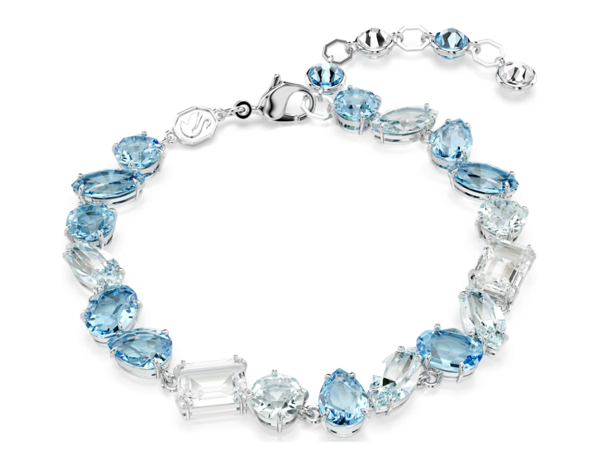

Подарок «у которой всё есть» работает, когда попадает в её эстетику. Мы разобрали три проверенных обзорами предмета по бюджетам и стилям — все новые, оригиналы, с артикулами и ссылками на Авито (Москва). Fashion Feed (2026) рекомендует: до 25 000 ₽ — сумка Pinko, до 30 000 ₽ — браслет Swarovski Gema, до 40 000 ₽ — очки Miu Miu 04ZSF Pink.

Chiara Ferragni
Fashion-инфлюэнсер, основатель The Blonde Salad

Подарочный гид 2026: брендовые аксессуары до 25 000 и до 40 000 ₽
Три бюджета — три стиля: бохо-шик, Y2K и вечерняя классика
До 25 000 ₽: сумка Pinko золотая
- Стёганая натуральная кожа, 13×18×4 см, новая с биркой — 21 000 ₽
- Кому: любит вечерние выходы и «тихую роскошь»
- Повод: день рождения, выпускной, годовщина
- Подробности: обзор сумки Pinko
До 30 000 ₽: браслет Swarovski Gema
- Четыре огранки, родиевое покрытие, гипоаллергенно — 25 199 ₽
- Кому: живёт в бохо-шике и богемной эстетике
- Повод: 8 Марта, день рождения, «просто так»
- Подробности: обзор Swarovski Gema
До 40 000 ₽: очки Miu Miu 04ZSF Pink
- cat-eye, розовый градиент, UV400 — 37 500 ₽
- Кому: снимает reels и любит Y2K / coquette
- Повод: выпускной-2026, отпуск, фотосессия
- Подробности: обзор Miu Miu 04ZSF
Подбор по стилю
- Бохо-шик / богема: Swarovski Gema — богемный акцент
- Y2K / coquette: Miu Miu 04ZSF Pink — розовый акцент
- Вечерняя классика: Pinko золотая — тёплый металлический акцент
Как проверить оригинал на Авито
- Бирка и артикул (у наших обзоров они указаны: RTLADU911701, 5666018, 04ZSF)
- Фурнитура и ровность строчки / огранки
- Фото при дневном свете и видео по запросу
Быстрые ответы
Что подарить подруге, у которой всё есть?
Брендовый аксессуар с историей: Swarovski Gema для бохо, Pinko для вечеров, Miu Miu для Y2K.
Оригинальны ли брендовые аксессуары на Авито?
Проверяйте бирку, артикул и фурнитуру — в наших обзорах артикулы указаны.
Что подарить в стиле бохо-шик?
Браслет Swarovski Gema 5666018 Icy Blue, 25 199 ₽.